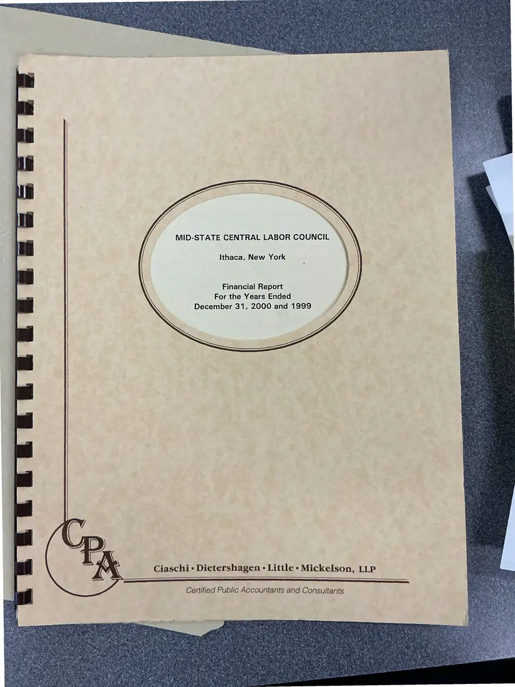
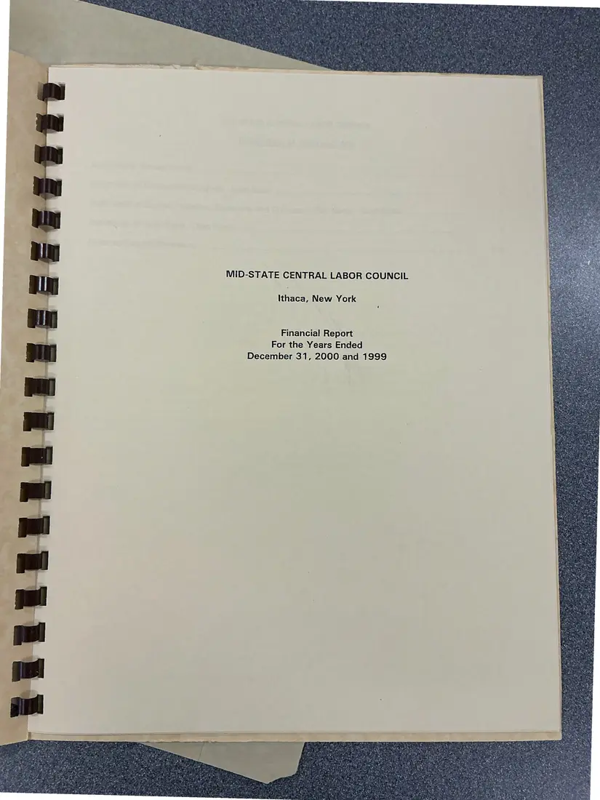
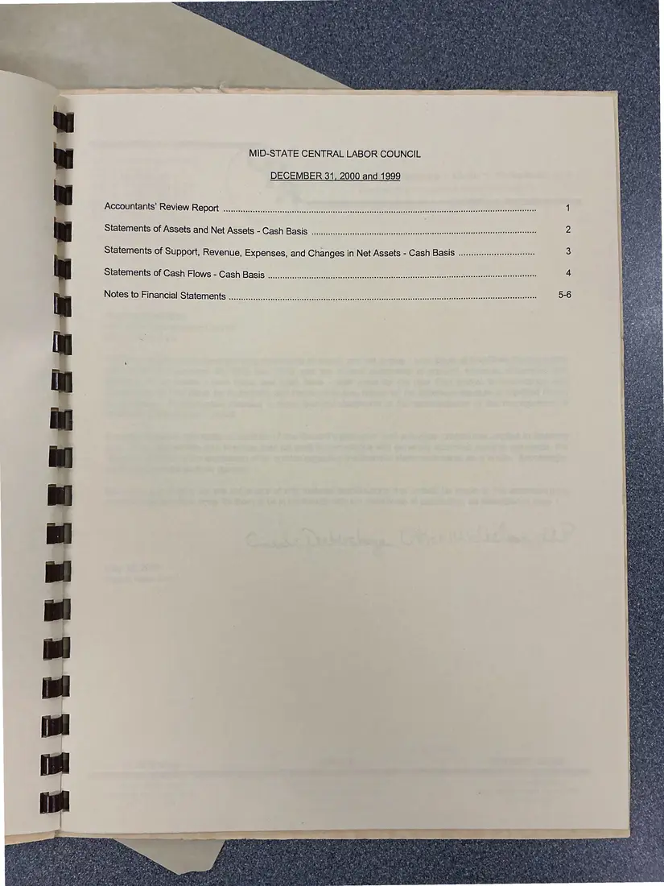
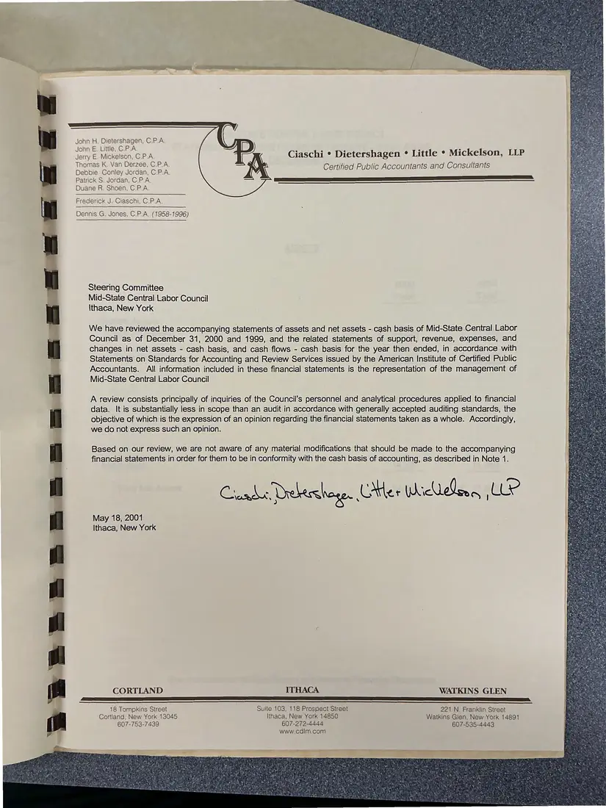
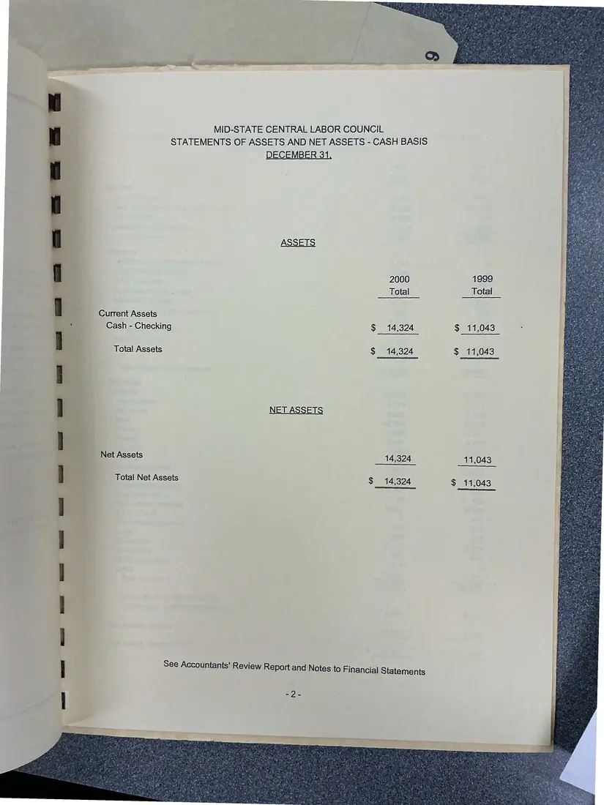
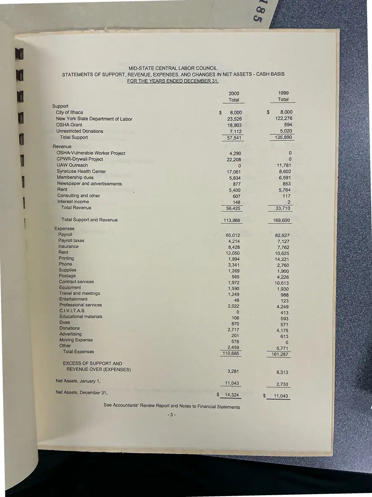
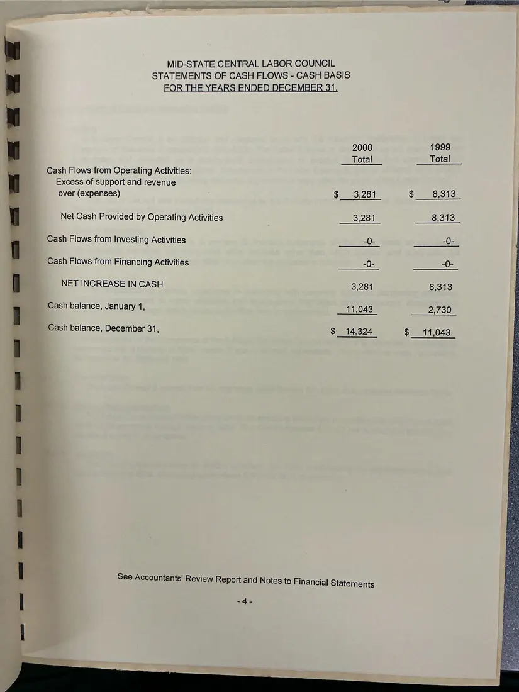
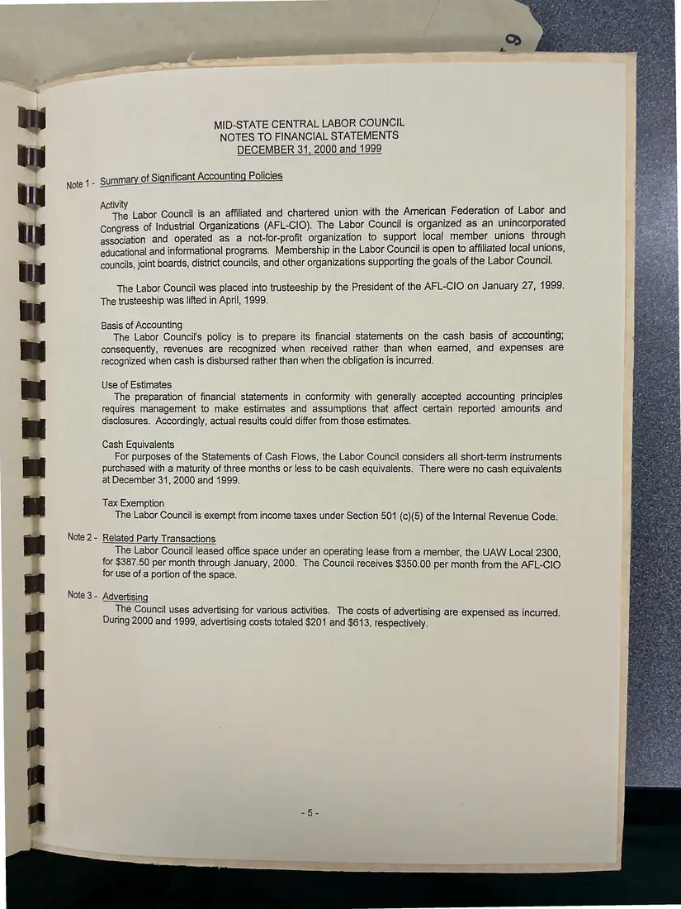

Financial report, 8 pages
Midstate Central Labor Council financial report, 2000 and 1999
Years ended December 31, 2000 and 1999 (report dated May 18, 2001)
A CPA review report by Ciaschi, Dietershagen, Little, Mickelson & Company (May 18, 2001), with statements of assets, support and expenses, cash flows, and notes. The pages were photographed back-to-front and are shown in reading order.
Download or cite this itemPages


(open zoom view)Read the page text (machine-read, mostly readable)
This text was generated automatically from the photograph and has not been corrected. The image is the authoritative record.
MID-STATE CENTRAL LABOR COUNCIL Ithaca, New York Financial Report For the Years Ended December 31, 2000 and 1999 Bae ( Ciaschi + Dietershagen « Little >» Mickelson, LLP Certified Public Accountants and Consultants


(open zoom view)Read the page text (machine-read, mostly readable)
This text was generated automatically from the photograph and has not been corrected. The image is the authoritative record.
MID-STATE CENTRAL LABOR COUNCIL Ithaca, New York Financial Report For the Years Ended December 31, 2000 and 1999


(open zoom view)Read the page text (machine-read, many errors)
This text was generated automatically from the photograph and has not been corrected. The image is the authoritative record.
MID-STATE CENTRAL LABOR COUNCIL DECEMBER 31, 2000 and 1999 Accountants’ Review Report See eeesesavenee sae deeerurewseeseses nav eeneeaecenewnsennesssverse BPO mV enV Reno Oho m nai nnn nena rHensmHAneeeadiaen snes eeneensevessnastmnenaves eee Statements of Assets and Net Assets - Cash Basis Statements of Support, Revenue, Expenses, and Changes in Net Assets - Cash Basis Statements of Cash Flows - Cash Basis Notes to Financial Statements


(open zoom view)Read the page text (machine-read, mostly readable)
This text was generated automatically from the photograph and has not been corrected. The image is the authoritative record.
John H, Dietershagen, C,P.A. John E. Little, C.P.A. Jerry E, Mickelson, C.P.A. Ciaschi * Dietershagen °¢ Little * Mickelson, LLP Thomas K. Van Derzee, C.P.A. Ne ; nts and Consultants Debbie Conley Jordan, C.P.A. Certified Public Accountants Patrick S. Jordan, C.P.A, Duane R. Shoen, C,P.A. Frederick J. Ciaschi, C.P.A. Dennis G. Jones, C.P.A. (1958-1996) Steering Committee Mid-State Central Labor Council Ithaca, New York We have reviewed the accompanying statements of assets and net assets - cash basis of Mid-State Central Labor Council as of December 31, 2000 and 1999, and the related statements of support, revenue, expenses, and changes in net assets - cash basis, and cash flows - cash basis for the year then ended, in accordance with Statements on Standards for Accounting and Review Services issued by the American Institute of Certified Public Accountants. All information included in these financial statements is the representation of the management of Mid-State Central Labor Council A review consists principally of inquiries of the Council’s personnel and analytical procedures applied to financial data. It is substantially less in scope than an audit in accordance with generally accepted auditing standards, the objective of which is the expression of an opinion regarding the financial statements taken as a whole. Accordingly, we do not express such an opinion. Based on our review, we are not aware of any material modifications that should be made to the accompanying financial statements in order for them to be in conformity with the cash basis of accounting, as described in Note 1. Cruadus, Drebteshage. Ae: On Wicleler (UES May 18, 2001 Ithaca, New York CORTLAND ITHACA WATKINS GLEN Foe TO aR DN PS Fa SE a a OO TR Fa SS Sa I rT 18 Tompkins Street Suite 103, 118 Prospect Street Cortland, New York 13045 Ithaca, New York 14850 607-753-7439 607-272-4444 www.cdim.com 221 N, Franklin Street Watkins Glen, New York 14891 607-535-4443


(open zoom view)Read the page text (machine-read, mostly readable)
This text was generated automatically from the photograph and has not been corrected. The image is the authoritative record.
MID-STATE CENTRAL LABOR COUNCIL STATEMENTS OF ASSETS AND NET ASSETS - CASH BASIS DECEMBER 31, Current Assets Cash - Checking $ 14,324 $ 11,043 Total Assets $ 14,324 $ 11,043 NET ASSETS Net Assets 14,324 11,043 _ Total Net Assets $ 14,324 $ 11,043


(open zoom view)Read the page text (machine-read, mostly readable)
This text was generated automatically from the photograph and has not been corrected. The image is the authoritative record.
MID-STATE CENTRAL LABOR COUNCIL FOR THE YEARS ENDED DECEMBER 31, 2000 Total Support City of Ithaca $ 8,000 New York State Department of Labor 23,526 OSHA Grant 18,903 Unrestricted Donations 7,112 Total Support 57,541 Revenue } OSHA-Vulnerable Worker Project 4,290 CPWR-Drywall Project 22,208 UAW Outreach 0 Syracuse Health Center 17,061 Membership dues 5,834 Newspaper and advertisements 877 Rent 4 5,400 Consulting and other 607 Interest income 148 Total Revenue 56,425 Total Support and Revenue 113,966 | Expenses Payroll 65,012 Payroll taxes 4,214 Insurance 8,428 Rent 12,050 Printing 1,994 Phone 3,341 Supplies 1,269 Postage 565 Contract services 1,972 Equipment 1,590 Travel and meetings 1,249 Entertainment 48 Professional services 2,022 C.IV.1.T.A.S. 0 Educational materials 106 Dues 870 Donations 2,717 Advertising 201 Moving Expense 578 Other 2,459 Total Expenses 110,685 EXCESS OF SUPPORT AND REVENUE OVER (EXPENSES) 3,281 Net Assets, January 1, 11,043 Net Assets, December 31, $ 14,324 SSS See Accountants’ Review Report and Notes to Financial Statements aie STATEMENTS OF SUPPORT, REVENUE, EXPENSES, AND CHANGES IN NET ASSETS - CASH BASIS 4999 Total $ 8,000 122,276 594 5,020 735,890 11,781 8,602 6,591 853 5,764 117 33,710 169,600 82,627 7,127 7,762 10,625 14,221 2,760 1,900 4,226 10,613 1,930 988 123 4,249 413 593 571 4,175 613 6,771 161,287 8,313 2,730 11,043


(open zoom view)Read the page text (machine-read, mostly readable)
This text was generated automatically from the photograph and has not been corrected. The image is the authoritative record.
MID-STATE CENTRAL LABOR COUNCIL STATEMENTS OF CASH FLOWS - CASH BASIS FOR THE YEARS ENDED DECEMBER 31, 2000 1999 _ Total _ ps Totaled Cash Flows from Operating Activities: Excess of support and revenue over (expenses) Sie 2 Olle S633) Net Cash Provided by Operating Activities : 3,281 _ 8,313 _ 0 Cash Flows from Investing Activities -0- -0- Cash Flows from Financing Activities -0- -0- NET INCREASE IN CASH 3,281 Sols Cash balance, January 1, 11,043 2,130 Cash balance, December 31, oo 114324 Se 1043


(open zoom view)Read the page text (machine-read, mostly readable)
This text was generated automatically from the photograph and has not been corrected. The image is the authoritative record.
MID-STATE CENTRAL LABOR COUNCIL NOTES TO FINANCIAL STATEMENTS DECEMBER 31, 2000 and 1999 mmary of Significant Accounting Policies Note 1- SU Aa) ii i i i j Federati f Lab d The Labor Council is an affiliated and chartered union with the American ederation of Labor an Congress of Industrial Organizations (AFL-CIO). The Labor Council is organized as an unincorporated association and operated as a not-for-profit organization to support local member unions through educational and informational programs. Membership in the Labor Council is open to affiliated local unions, councils, joint boards, district councils, and other organizations supporting the goals of the Labor Council. eae. The Labor Council was placed into trusteeship by the President of the AFL-CIO on January 27, 1999. The trusteeship was lifted in April, 1999. Basis of Accounting é The Labor Council's policy is to prepare its financial statements on the cash basis of accounting; consequently, revenues are recognized when received rather than when earned, and expenses are recognized when cash is disbursed rather than when the obligation is incurred. Use of Estimates The preparation of financial statements in conformity with generally accepted accounting principles requires management to make estimates and assumptions that affect certain reported amounts and disclosures. Accordingly, actual results could differ from those estimates. Cash Equivalents For purposes of the Statements of Cash Flows, the Labor Council considers all short-term instruments purchased with a maturity of three months or less to be cash equivalents. There were no cash equivalents at December 31, 2000 and 1999. Tax Exemption The Labor Council is exempt from income taxes under Section 501 (c)(5) of the Internal Revenue Code. Related Party Transactions The Labor Council leased office space under an operating lease from a member, the UAW Local 2300, for $387.50 per month through January, 2000. The Council receives $350.00 per month from the AFL-ClO for use of a portion of the space. Note 3 - Advertising The Council uses advertising for various activities. The costs of advertising are expensed as incurred. During 2000 and 1999, advertising costs totaled $201 and $613, respectively.
See something wrong, or recognize a person or event? Send a correction. If you hold rights in this item or think it should not be public, write to the same address.